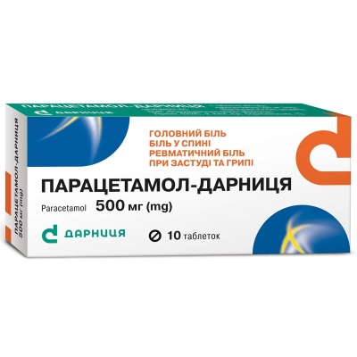
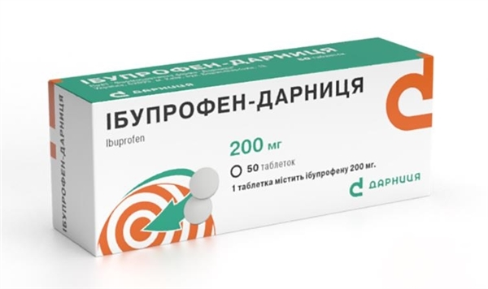
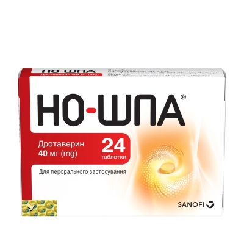
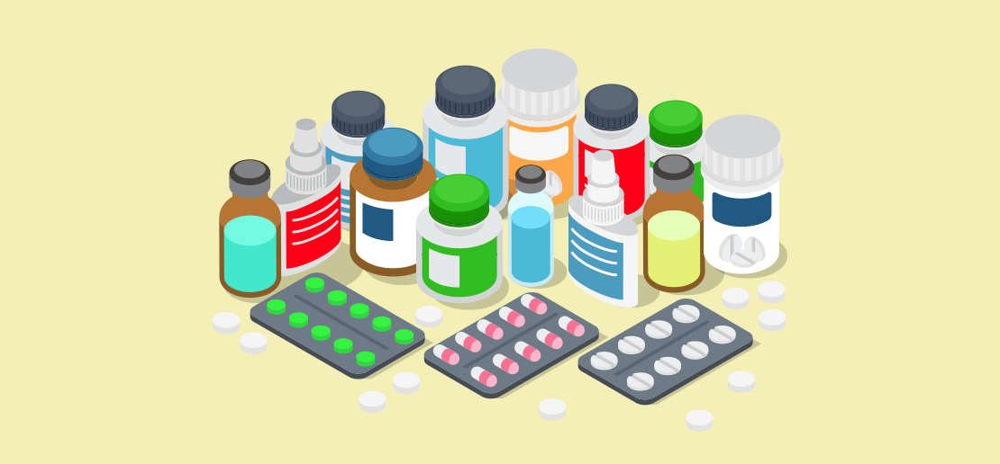
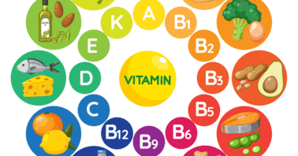

Каталог
Від болючих головних болей до серйозних хронічних захворювань — ми знайдемо все!
Популярні ліки в Україні
| Назва | Зображення | Детальна інформація | Призначення |
|---|---|---|---|
| Парацетамол |  | 🔗 Детальніше про всі препарати |
Використовується для зниження температури та знеболення при головному, зубному
болю, болю у м’язах.
Застосовується при застуді, грипі, лихоманці. Безпечний у рекомендованих дозах, але може спричинити навантаження на печінку. |
| Ібупрофен |  |
Належить до нестероїдних протизапальних препаратів (НПЗП).
Ефективний при суглобовому, м’язовому, головному, зубному болю. Допомагає зменшити запалення, використовується при артритах, травмах, гарячці. |
|
| Но-шпа |  |
Потужний спазмолітик, знімає спазми гладкої мускулатури.
Застосовується при болях у шлунку, кишківнику, ниркових та печінкових кольках. Часто призначається при менструальних болях, головних болях, викликаних спазмами судин. |
Як зробити замовлення?
- Знайдіть товар. Використовуйте пошук або каталог, щоб знайти потрібний товар, та натисніть «Знайти в аптеках».
- Виберіть аптеку. Ознайомтесь із переліком аптек, виберіть відповідну та натисніть «Забронювати».
- Забронюйте. Введіть свої контактні дані та натисніть «Підтвердити бронь».
- Заберіть замовлення. Після підтвердження ви отримаєте повідомлення з номером бронювання. Використайте цей номер для отримання товару в аптеці.
Ліки та профілактичні засоби:
- Нервова система
- Знеболюючі
- Респіраторна
- Профілактика грипу та застуди
- Серцево-судинна система
Вітаміни та мінерали:
- Вітаміни
- Мінерали
- Риб'ячий жир
Спорт та здоров'я:
- Популярне
- Батончики протеїнові
- Жироспалювачі
- Амінокислоти
- Протеїн
- Гейнер
- Креатин
- Тестостеронові бустери
- Передтренувальний комплекс
- ТОП Бренди
- Optimum Nutrition
- Power Pro
- Biotech
- Olimp
- NOW
- Solgar
- Mutant
- Scitec Nutrition
- OstroVit
- Nutrend
- IronMaxx